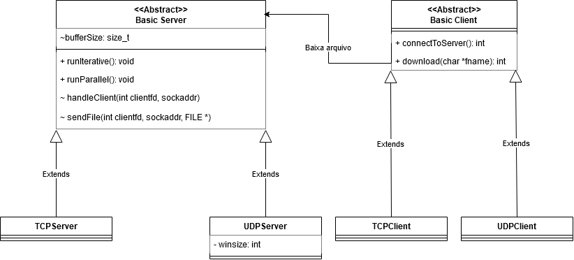

Alunos
- Bruno Aquiles de Lima GRR:20221230
- Marcelo Gyovani Pereira GRR:20221225
Introdução
O objetivo deste trabalho é comparar o desempenho dos protocolos de transporte TCP e UDP em um cenário de transferência de arquivos. Para isso, foi implementado um servidor e um cliente em C++ que utilizam os protocolos TCP e UDP. O servidor TCP foi implementado de forma iterativa e paralela, enquanto o UDP foi implementado somente de forma iterativa. Foram realizados testes de transferência de arquivos de 10MB em rede local, variando parâmetros como tamanho do buffer de transmissão, número de clientes e tamanho da janela de controle de fluxo do UDP. Os resultados obtidos foram analisados e comparados ao final.
Forma da comunicação
- Cliente inicia conexão com servidor
- Cliente envia o nome do arquivo que deseja baixar (max 256 bytes). UDP começa nesse passo
- Servidor abre o arquivo
- Servidor envia mensagem com tamanho do arquivo, tamanho do buffer de transmissão e tamanho de janela no caso do UDP.
- Cliente recebe dados de transmissão, aloca buffer e se prepara para receber dados
- Servidor envia dados do arquivo para o cliente
- Servidor encerra conexão
- Cliente fecha arquivo
O servidor TCP pode funcionar tanto de forma iterativa, quanto de forma paralela com a criação de uma thread para lidar com cada cliente novo. Já o servidor UDP funciona somente de forma iterativa, mas foi considerado fazer de forma paralela por meio da criação de sockets utilizando outras portas e um socket que imita um socket em modo de escuta TCP, que iria redirecionar os clientes para outra porta e possibilitando o envio de arquivos de forma paralela por meio de outras threads, entretanto por conta da complexidade, essa ideia foi deixada de lado.
Arquivos
- Servidor guarda os arquivos no diretório files, utilizando ele como raíz para procura de arquivos.
- Cliente salva os arquivos baixados no diretório downloads.
Utilização
Para compilar o código, basta rodar o comando make, desde que o Makefile e g++ estejam instalados.
Para rodar o servidor:
./server <ipv4_addr> <port> <protocol> <buffer_size> <win_size_udp | mode_tcp(iter|par)>Sendo que o endereço IPv4 é o endereço que se deseja rodar o servidor. Também é necessário a porta que o servidor deve usar, o protocolo de transporte ("tcp" ou "udp"), tamanho do buffer utilizado para as transmissões e o último argumento varia de acordo com o protocolo de transporte. No caso do UDP, é o tamanho da janela utilizada na janela deslizante (em quantidade de segmentos que possuem tamanho <buffer_size>), enquanto no TCP é o modo do servidor ("iter" para iterativo e "par" para paralelo)
Para rodar o cliente:
./client <server_ipv4_addr> <server_port> <protocol> <fname> <fout>Onde é necessário o endereço IPv4 do servidor, a porta do servidor, o protocolo ("tcp" ou "udp"), o nome do arquivo que será baixado e o nome do arquivo que será salvo.
Implementação
Tanto o servidor quanto o cliente foram implementados na linguagem C++ utilizando a interface de sockets padrão da linguagem em ambientes Linux. A implementação da comunicação sobre TCP não há nada de especial, o servidor começa a transmitir a sequência de bytes do arquivo para o cliente, e o próprio protocolo cuida do controle de fluxo, sequencialização, etc. Entretanto, no UDP foi implementado o controle de fluxo por meio de janelas deslizantes, sequencialização e confirmação de mensagens.
Diagrama de Classes do Projeto
Código-fonte
project/ ├── include │ ├── basic_client.hpp │ ├── basic_server.hpp │ ├── protocol.h │ ├── tcp_client.hpp │ ├── tcp_server.hpp │ ├── udp_client.hpp │ └── udp_server.hpp └── src ├── basic_client.cpp ├── basic_server.cpp ├── client.cpp ├── server.cpp ├── tcp_client.cpp ├── tcp_server.cpp ├── udp_client.cpp └── udp_server.cpp
Os arquivos client.cpp e server.cpp contém as implementações da interface de linha de comando do cliente e servidor, respectivamente. O arquivo protocol.h contém definições utilizadas tanto pelo cliente quanto pelo servidor, servindo como um arquivo comum apenas para definição de um enum.
O código também está disponível no GitHub
Testes
Os mesmos testes para servidor iterativo serão feitos para servidor paralelo.
Cada teste é feito com base no número de clientes:
- O número de clientes começa em 1 e vai dobrando até 8.
- Cada cliente faz uma transferência de um arquivo de 10MB.
- Os dados de cada teste são salvos em um arquivo CSV
Para cada teste, serão analisadas as métricas:
- Número de tentativas
- Perda de pacotes
- Tempo de download
- sha256sum do arquivo baixado
Estrutura de diretórios
Cada teste vai gerar logs salvos no diretório logs/ com a seguinte estrutura:
logs
├── client
│ └── rede_local
│ ├── TCP
│ │ ├── iter_1_1024.csv
│ │ ├── iter_2_1024.csv
│ │ ├── par_1_4096.csv
│ │ └── par_2_4096.csv
│ └── UDP
│ ├── iter_4_1024_16.csv
│ ├── iter_8_4096_4.csv
│ └── iter_6_1024_64.csv
└── server
└── rede_local
├── TCP
│ ├── iter_8192.txt
│ └── par_4096.txt
└── UDP
└── iter_4_1024_16.txt
└── iter_2_4096_64.txt
Logs client
Onde iter_2_8192.csv é o log do cliente TCP comunicando com servidor iterativo com tamanho de buffer igual a 8192 bytes atendendo 2 clientes. Enquanto par_X_N.csv é o log do servidor TCP paralelo com tamanho de buffer N bytes atendendo X clientes.
Para o UDP, é a mesma coisa com a adição do tamanho da janela no final do nome. Por exemplo, iter_X_N_M.csv é o cliente UDP comunicando com servidor iterativo com tamanho de buffer igual a N bytes e tamanho de janela M atendendo X clintes. Como não há implementação do servidor UDP "paralelo", não há logs em paralelo para o UDP.
Logs server
iter_N.txt é o log de todas as conexões de clientes com o servidor iterativo que possui um buffer de transmissão de N bytes. Enquanto par_N.txt são todas as conexões de clientes com um servidor paralelo que possui um buffer de transmissão de N bytes. No caso do UDP, os txt também possuem o campo de janela, sendo nomeados da seguinte forma: iter_N_M.txt onde N é o tamanho do buffer e M é o tamanho da janela do controle de fluxo.
Cada arquivo csv gerado por um teste, terá a seguinte estrutura:
| Num tentativas | Perda de pacotes | Tempo de download | Sha256sum |
|---|---|---|---|
| N | c1_x0 | c1_y0 | 1 |
| - | - | Tempo de teste total | - |
Onde cada linha é uma transmissão de arquivo para um cliente cn. A primeira coluna indica o número de tentativas necessárias para baixar o arquivo, útil somente no caso do UDP, por causa que o servidor iterativo fica recusando clientes enquanto está enviando um arquivo para o cliente. A segunda coluna mostra a perda de pacotes do cliente durante o download, mas assim como o número de tentativas, é útil somente para a análise do UDP. A terceira coluna é o tempo de download, quanto tempo o cliente levou para baixar o arquivo de teste. A última coluna é o resultado da comparação do checksum SHA-256 entre o arquivo original e o arquivo baixado.
A última linha do csv apresenta um único valor que fica na terceira coluna, representando o tempo total de um teste/bateria de clientes, útil no caso do TCP paralelo, onde o tempo total não é necessariamente a soma do tempo de todos os clientes.
Exemplo de arquivo csv gerado de um teste com 2 clientes:
| Num tentativas | Perda de pacotes | Tempo de download | Sha256sum |
|---|---|---|---|
| N | c1_x0 | c1_y0 | 1 |
| N | c2_a0 | c2_b0 | 1 | - | - | Tempo de teste total | - |
Condução dos Testes
Para a realização dos testes foi implementado um servidor HTTP simples que possibilita o cliente instanciar o servidor de testes remotamente, permitindo a automatização de todos os testes. A implementação desse servidor foi feita em liguagem Python e o código pode ser encontrado no diretório scripts.
scripts/ ├── gen_files_and_structure.py └── plot_results.py ├── run_test.py └── server_manager.py
O arquivo gen_files_and_structure.py é um script para gerar a estrutura de diretórios necessária para a realização dos testes e também o arquivo aleatório de 10MB para utilização nos testes. O script run_test.py é o cliente HTTP que faz a instanciação de múltiplos clientes em paralelo para realizar os testes dos protocolos TCP e UDP. Por fim, o server_manager.py é o servidor HTTP que gerencia o servidor de teste, instanciando novos servidores em portas diferentes quando requisitado.
Foram realizados testes simulando a execução de 1, 2, 4, e 8 clientes requirindo arquivos de 10MB para o servidor. Para o TCP, foram realizados testes variando o número de clientes, o tamanho do buffer de transmissão e o modo do servidor (iterativo ou paralelo). Para o UDP, o modo não variou porque ele possui somente o modo iterativo, entretanto o tamanho da janela do controle de fluxo foi variado. Foram utilizados arquivos de somente 10MB por causa da grande quantidade de testes, o que resultava em um tráfego de rede muito alto, fazendo os testes ficarem muito extensos.
Após a tranferência de arquivos, o script calcula o hash SHA-256 do arquivo baixado e do arquivo original (o cliente precisa ter uma cópia do arquivo original antes de rodar os testes) e compara, colocando 1 no seu log csv caso o hash seja igual ao original e 0 caso contrário, permitindo o cálculo da taxa de sucesso de download e a necessidade de verificação de erros.
Aqui estão os parâmetros de teste utilizados, tendo um teste para cada combinação de parâmetros:
- Tamanho de buffer de transmissão = [1024, 4096, 16384, 49152] bytes
- Número de clientes = [1, 2, 4, 8]
- Tamanho de janela UDP = [4, 16, 64, 256]
Intervalo de tempo= [0] (O intervalo de tempo entre a instanciação de clientes foi retirado pois sua relevância não é tão alta e ajuda a diminuir o grande número de testes)- Tamanho de Arquivo = 10MB
Inicialmente, os testes seriam realizados utilizando dois ambientes, rede local e rede externa. Para a rede externa, seria utilizado o Radmin, um software de acesso remoto que permite criar uma rede virtual privada (VPN), simulando condições de tráfego da internet, como latência e perda de pacotes, para testes mais realistas. Entretanto, por conta de limitações de tempo e tecnicas, os testes foram realizados somente em rede local.
Resultados
Tempo de Download
Os gráficos abaixo mostram o tempo médio de download dos arquivos de 10MB para cada teste realizado. O eixo X representa o número de clientes e o eixo Y representa o tempo médio de download em segundos.
Tempo de download do TCP:


Tempo de download do UDP:

Perda de Pacotes
Perda de pacotes dos clientes durante a transferência dos arquivos de 10MB para cada teste realizado em UDP. O eixo X representa o número de clientes e o eixo Y representa a porcentagem de pacotes perdidos.

Checksum SHA-256
Mostra a porcentagem de arquivos que tiveram o checksum SHA-256 igual ao arquivo original para cada teste realizado. O eixo X representa o número de clientes e o eixo Y representa a porcentagem de arquivos com checksum igual ao original.
Checksum SHA-256 do TCP:

Checksum SHA-256 do UDP:

Conclusão
Os testes realizados mostraram que o protocolo UDP tem uma melhora significativa no tempo de download conforme o tamanho do buffer de transmissão e o tamanho da janela de controle de fluxo aumentam. Por outro lado, um buffer maior resultou em um aumento na perda de pacotes. O protocolo TCP, manteve um tempo de download mais constante para cada teste, sendo que o TCP iterativo teve uma melhor performance em relação ao TCP paralelo, provavelmente por conta da sobrecarga de criação de threads em uma máquina com poucos recursos.
No geral, o protocolo TCP é uma alternativa mais segura e confiável para transferência, eliminando a necessidade de implementar mecanismos muito complexos caso a perda de pacotes seja um problema (o que foi o caso desse trabalho). Ainda assim, o UDP pode ser uma alternativa mais rápida e eficiente para transferência de arquivos em redes locais, onde a perda de pacotes não mostrou ser um problema tão grande.